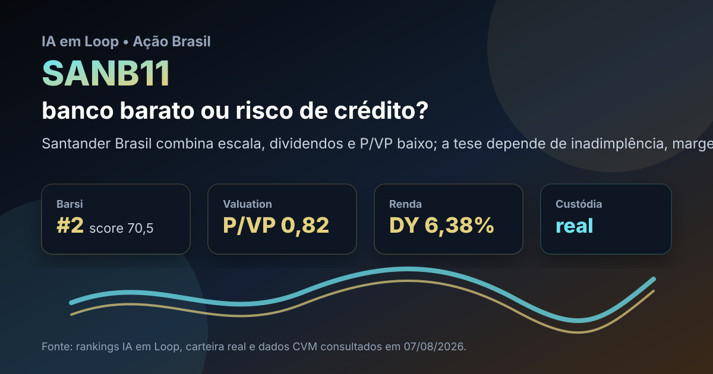

07/08: SANB11, Santander e o teste do banco barato
SANB11 aparece entre os nomes mais fortes do rastreador Barsi do IA em Loop e também está na carteira BESST real. A pergunta central é direta: o desconto de valuation e o dividendo compensam o risco de crédito de um banco privado em ciclo ainda exigente?

Santander Brasil tem escala, marca e dividendos; o ponto sensível é se o retorno sobre patrimônio volta a melhorar sem piora relevante da inadimplência.
Resposta curta: barato no preço patrimonial, mas não sem risco
No rastreador Barsi mais recente do IA em Loop, SANB11 aparece em 2º lugar, com score de 70,5, dividend yield de 6,38%, P/VP de 0,82, P/L de 13,55 e histórico de 17 anos com dividendos. A carteira BESST real também mostra SANB11 como uma das maiores posições, com peso aproximado de 14,4% no painel publicado.
A leitura é simples: o mercado não está pagando prêmio por euforia. Um banco privado de grande porte negociando abaixo do valor patrimonial costuma levantar duas hipóteses. A primeira é oportunidade de renda e recuperação. A segunda é alerta de rentabilidade abaixo do potencial, custo de crédito elevado ou crescimento mais lento.
O que os dados verificados mostram
Nos dados abertos da CVM consultados em 07/08/2026, o Banco Santander Brasil aparece como companhia ativa no setor de bancos, sob o código CVM 020532. O ITR consolidado de 30/06/2026 registra R$ 85,474 bilhões em receitas da intermediação financeira no primeiro semestre e R$ 43,039 bilhões apenas no segundo trimestre.
O mesmo conjunto mostra R$ 31,910 bilhões de resultado bruto da intermediação financeira no semestre, R$ 8,104 bilhões de lucro/prejuízo consolidado do período na DRE e R$ 6,244 bilhões de lucro líquido consolidado do período na demonstração de resultado abrangente. No balanço de 30/06/2026, o ativo total consolidado estava em R$ 1,291 trilhão e o patrimônio líquido consolidado em R$ 129,093 bilhões.
| Métrica verificada | Fonte/período | Valor | Leitura |
|---|---|---|---|
| Receitas da intermediação financeira | CVM ITR 1S26 | R$ 85,474 bi | escala relevante de banco sistêmico |
| Resultado bruto da intermediação | CVM ITR 1S26 | R$ 31,910 bi | margem financeira ainda sustenta a tese |
| Lucro líquido consolidado | CVM DRA 1S26 | R$ 6,244 bi | rentabilidade positiva, mas precisa ser comparada ao patrimônio |
| Ativo total | CVM balanço 30/06/26 | R$ 1,291 tri | escala amplia resiliência e complexidade |
| Patrimônio líquido consolidado | CVM balanço 30/06/26 | R$ 129,093 bi | base para julgar retorno e P/VP |
Por que SANB11 importa agora
Banco é uma tese diferente de commodity ou indústria. O ativo pode parecer barato por P/VP, mas o que destrava valor é retorno sobre patrimônio, qualidade da carteira de crédito e controle de despesa. Se a inadimplência estabiliza e a margem financeira melhora, o desconto tende a ficar mais interessante. Se o crédito piora, o P/VP baixo vira armadilha clássica de banco.
Para o investidor educacional que acompanha rankings, SANB11 é relevante porque junta três sinais: presença no topo do filtro de dividendos, posição real em carteira e valuation patrimonial abaixo de 1 vez. Nenhum desses pontos elimina o risco; juntos, eles justificam acompanhamento disciplinado.
SANB11 parece mais uma tese de banco descontado e pagador de dividendos do que uma história de crescimento acelerado. O acompanhamento deve focar em inadimplência, margem financeira, despesas, retorno sobre patrimônio e manutenção dos proventos. Sem melhora operacional, o desconto pode persistir.
O que favorece e o que ameaça a tese
Favoráveis
• Banco privado de grande porte, com marca conhecida e escala nacional.
• P/VP de 0,82 no rastreador Barsi, sinal de desconto patrimonial.
• Dividend yield de 6,38% e longo histórico de pagamentos.
• Presença na carteira BESST real, com peso relevante.
• Lucro líquido positivo e ativo total acima de R$ 1 trilhão no ITR.
Desfavoráveis
• Bancos são sensíveis a inadimplência, provisões e ciclo de crédito.
• P/L de 13,55 não é extremamente barato se a rentabilidade não acelerar.
• Concorrência de bancos digitais e pressão por eficiência seguem relevantes.
• Dividendos dependem de capital, lucro recorrente e regulação.
• A tese pode ficar travada se o mercado exigir retorno maior sobre patrimônio.
Gatilhos para acompanhar
- Inadimplência e provisões: queda ou estabilização melhora a leitura; piora contínua reduz a margem de segurança.
- Retorno sobre patrimônio: o P/VP abaixo de 1 só destrava valor se o banco mostrar retorno convincente.
- Margem financeira: é o motor principal da geração de resultado em ambiente de juros ainda alto.
- Eficiência: controle de despesas e digitalização podem compensar competição maior.
- Proventos: manutenção de dividendos reforça a tese de renda; corte relevante muda a narrativa.
Conclusão
SANB11 não é uma tese de crescimento explosivo. É uma tese de banco grande, descontado pelo patrimônio e com dividendo relevante. A oportunidade aparece se o lucro recorrente e o retorno sobre patrimônio melhorarem sem deterioração de crédito. O risco é o desconto estar correto porque o mercado antecipa rentabilidade pressionada por mais tempo.
Na régua do IA em Loop, SANB11 merece acompanhamento por combinar ranking, carteira real e dados públicos verificáveis. Mas a decisão educacional não deve parar no dividend yield: o centro da análise é se o banco consegue transformar escala em retorno acima do custo de capital.